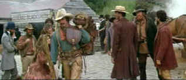

| Quigley
Down Under/B+,B- |
| MGM/1990/120/ANA 2.35 |
The story idea of transplanting a rough and ready Western hero to the Australian continent is just as sure to be on target as
the oversized Sharps rifle and its Vernier site which invariably hits the bulls eye under the
caress of Tom Selleck’s Matthew Quigley. Simon Wincer, in the follow-up to the phenomenal
directing success of his television mini-series Lonesome Dove succeeds in crafting an
exceedingly affable Western tale.
Sharpshooter Matthew Quigley arrives in Fremantle, Australia after answering an
ad for a marksman placed by rancher Elliot Marston. Within moments of getting off the boat,
Quigley saddles himself with a ragged addled women and confronts the Marston men sent to pick him
up. Quigley's integrity makes it difficult for him to play opportunist.
 |
| Quigley sets his standards. ©MGM |
Quigley Down Under packs most of the ammunition necessary for a grand shoot-em-up into two
hours. Fist fights are staged with brio,
gunfights feature quick draws, and Quigley is just as fast with the lash of a humorous
tongue as he is with the butt of his rifle. The wide screen images of the Australian frontier are
recorded in graceful vistas. Basil Poledouris has scored a rousing musical accompaniment to the
enjoyable action.
Australian pioneer spirit serves Wincer well for understanding the western genre. This
accomplished film is right on target with most every shot. Quigley is economically defined by a
number of small scripted details at the opening of the film and reinforced by innocent dialogue
delivery by affable star Tom Selleck. Right off the boat, with one stroke of his long rifle, Quigley’s characteristic
defense of the” little guy” is accepted. Wincer uses Foley effects to
great use and displays a panache for eloquent editing with the superb title sequence.
Tom Selleck is wonderful as Quigley. He is perfectly coifed and clothed to
capture a daguerreotype come to life legendary Western shooter. Selleck’s physical stature is
ideal for handling the long elegant rifle, whether wielding it as a devastating staff in the
rousing opening scenes or demonstrating the long range shots that shock disbelieving victims into
limp lifelessness. Selleck's easygoing likeable screen persona brings added value to Quigley. Laura
San Giacomo has the difficult role of Crazy Cora and acquits herself admirably. Her performance can
be rather grating, but that is the nature of the character after all. Alan Rickman is somewhat arch
as land baron Marston, but he has fun with the role.
Is that all the resolution there was in the transfer
elements? Quigley Down Under is not quite up to snuff in the sharpness department. There are
a number of scenes that are slightly soft. At least there is little evidence of peak transition
edge ringing. Colors are fine but not robust. But this is a dusty picture of the Australian west.
Black level and shadow detail are adequate. No, the transfer doesn't measure of to the stature of
Quigley's character, but it doesn't overtly detract from the pleasure of the flick either. The great score by composer Basil
Poledouris is dished out to gratifying effect in Dolby Digital 2 channel surround. |
|
|
|

Searchers,
The/ A,B

John Wayne invests Ethan Edwards with enormous dignity and
determination. A classic western from director John Ford. Mesmerizingly beautiful.

Selections from the Feature Archive
include articles on Akira Kurosawa, Frank
Darabont, Blonde Bimbos, Hollywood Street Gangs, or Vietnam: The
Hollywood Pariah, and many more....
A Western is a Western is a Western

Place or time it's still a Western from John Ford's Drums
Along the Mohawk to John Sturges' Bad Day at Black Rock.
 
ISF Monitor Calibrations in the
Tristate New York area. Lots of hardware info and frequent hardware peaks from video expert Kevin
Miller. They may be judgmental, but that's the point, isn't it. Lots of DVD reviews plus news and
more.
 Have you visited Home Theater
Talk lately? One of the friendliest places on the Net for Home Theater and DVD discussion, you
can get help for installation problems or simply share your opinions with other Vidiots. Have you visited Home Theater
Talk lately? One of the friendliest places on the Net for Home Theater and DVD discussion, you
can get help for installation problems or simply share your opinions with other Vidiots.

A new entry in the 2001 home theater site sweepstakes. Chief focus on
hardware reviews with a smattering of software.

The AV
Science Forum provides great feedback on the latest home theater equipment with a wide range of
opinions. Outstanding home theater resource.
|